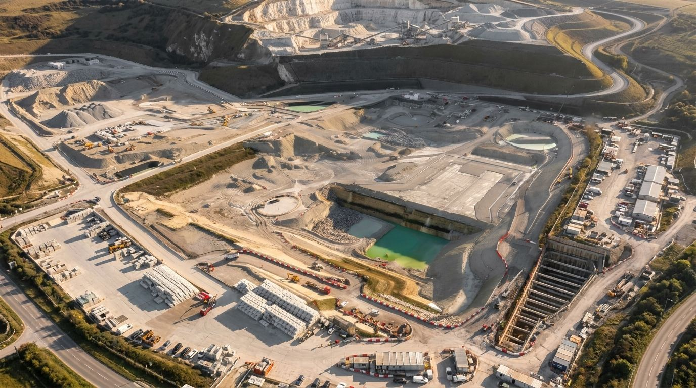
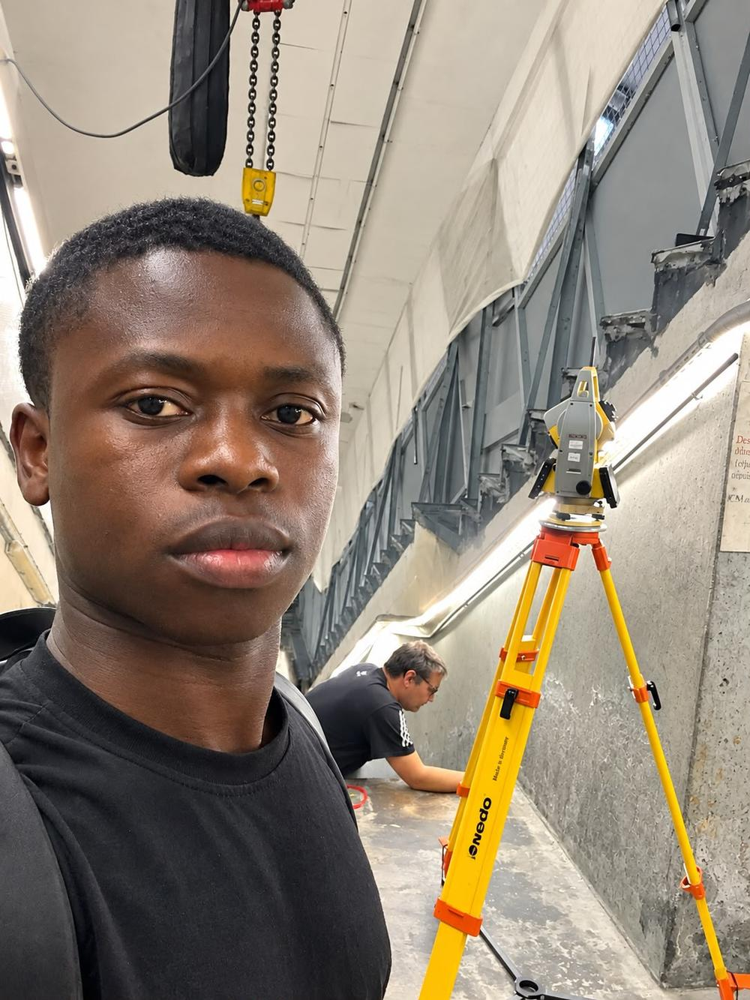
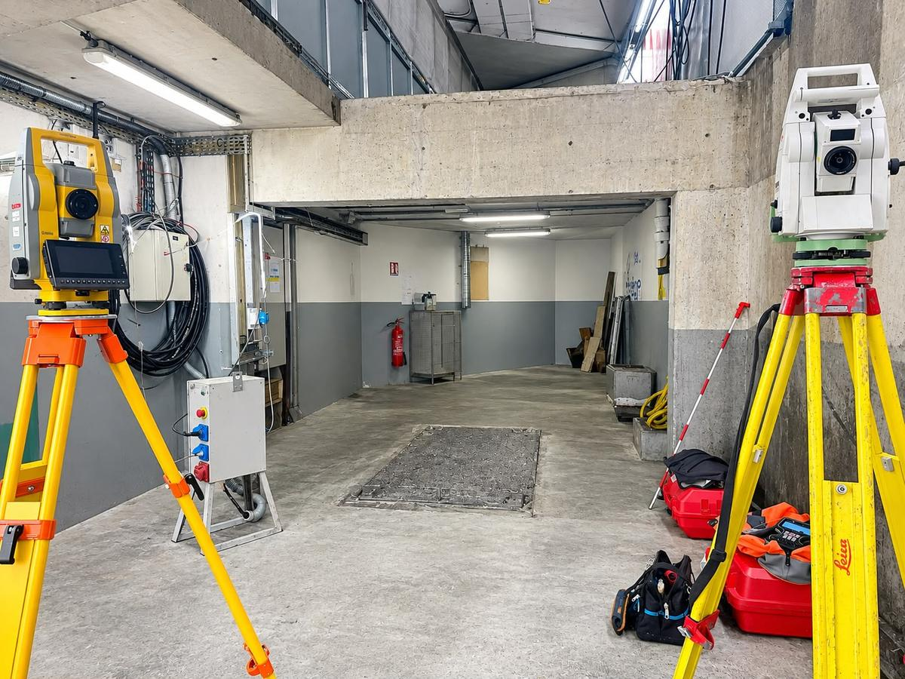

Levé topographique — [ville / type de site]
[Contexte de la mission en une ou deux phrases : surface, contrainte, objectif du client.]

Mon métier consiste à mesurer, quantifier et analyser les données géospatiales afin de les transformer en véritables outils d'aide à la décision.
GéoAxe accompagne les entreprises de travaux publics, les bureaux d'études, les acteurs du bâtiment, les industriels et les collectivités dans la mesure, la représentation et le contrôle de leurs projets.
De la campagne de mesures sur le terrain jusqu'à la remise des plans et des modèles 3D, j'interviens sur l'ensemble du cycle de la donnée géospatiale : acquisition, traitement, analyse, restitution et accompagnement du projet.

Photo à fournirVous en train de travailler : station totale, GNSS ou tablette sur chantierapropos-terrain.jpg
Du levé de terrain au contrôle géométrique d'un ouvrage, chaque mission répond à une question simple : où, à quelle altitude, et avec quelle précision ?
Levés planimétriques et altimétriques, plans topographiques, modèles numériques de terrain et implantation de repères.
En savoir plusRelevés d'intérieurs, de façades et de toitures, plans d'état des lieux, coupes, élévations et modélisation 3D.
En savoir plusRelevés d'emprises, implantation d'axes et de plateformes, suivi de terrassements, cubatures et récolement.
En savoir plusRelevés de voirie et de réseaux, levés de tranchées avant remblaiement, récolement géoréférencé des réseaux posés.
En savoir plusContrôle d'alignement, de verticalité, de nivellement et de planéité, comparaison entre le projet et l'exécuté.
En savoir plusGéoréférencement, cartographie thématique, bases de données SIG, conversion DAO/SIG et analyse spatiale.
En savoir plus
Photo à fournirMatériel en action : station totale, récepteur GNSS, scanner 3D ou dronesavoir-faire-acquisition.jpg
Une mission ne s'arrête pas au terrain. Elle commence par la préparation et se termine par des livrables exploitables directement dans vos outils.
GNSS, station totale, nivellement, scanner 3D, photogrammétrie et drone.
Plans DAO, profils, MNT, nuages de points, cubatures et données SIG.
Report des coordonnées et altitudes du projet, contrôle des tolérances.
Analyse du besoin, méthodologie, assistance aux bureaux d'études.
Décrivez-moi votre besoin : vous recevez un devis clair et gratuit sous 24 heures, avec le périmètre de mission, les livrables et le délai.
Huit engagements simples, valables sur chaque mission, quelle que soit sa taille.
Chaque mesure est contrôlée et rattachée à un système de référence connu.
Périmètre de mission, livrables et délais définis noir sur blanc avant de commencer.
Réponse sous 24 heures ouvrées et respect des délais annoncés pour les livrables.
Respect des règles de sécurité et des procédures propres à chaque chantier.
Données brutes, calculs et contrôles conservés et restituables à la demande.
Les informations et documents confiés restent strictement confidentiels.
Méthode choisie selon vos contraintes techniques, de délai et de budget.
Des échanges réguliers, en langage clair, du premier contact à la remise.
Un déroulé identique sur chaque mission, pour que vous sachiez toujours où en est votre dossier.
Vous décrivez votre besoin par téléphone, par e-mail ou via le formulaire. Je reviens vers vous sous 24 heures ouvrées.
Étude du site, des documents disponibles (plans, DWG, PV) et des contraintes d'accès, de délai et de précision.
Vous recevez une méthode d'intervention, un délai, la liste des livrables et un prix ferme.
Réalisation de la mission de terrain et du traitement en bureau, avec un point d'avancement si le chantier est long.
Vérification des résultats, présentation des livrables aux formats convenus et archivage des données.
Chaque projet est présenté avec son contexte, la méthode employée et les livrables remis.
 Photo à fournirPhoto du chantier ou extrait du plan produit
Photo à fournirPhoto du chantier ou extrait du plan produitprojet-01.jpg
[Contexte de la mission en une ou deux phrases : surface, contrainte, objectif du client.]
 Photo à fournirPhoto d'implantation ou de suivi de chantier
Photo à fournirPhoto d'implantation ou de suivi de chantierprojet-02.jpg
[Contexte de la mission en une ou deux phrases : nature de l'ouvrage, tolérances, délai.]
 Photo à fournirPhoto de façade relevée ou visuel du nuage de points
Photo à fournirPhoto de façade relevée ou visuel du nuage de pointsprojet-03.jpg
[Contexte de la mission en une ou deux phrases : surface relevée, livrables attendus.]
GéoAxe réalise des prestations techniques de relevé, de représentation, d'implantation, de contrôle et de récolement. Les opérations qui fixent juridiquement les limites de propriété, comme le bornage, doivent être confiées à un géomètre-expert inscrit à l'Ordre.